08.31.2008 22:00
Moved old blog entries into nanoblogger
I just finished converting some of my
old blog posts from a raw weblog.html file into nanoblogger
entries. The eventual goal is to move beyond nanoblogger. I'm at
2780 entries and it is getting to be way to slow. I needed
something somewhat mindless to do today and that one won. The posts
range from July 2007 to Nov 2004. Somewhere I have a file with even
older stuff, but I can't seem to find it right now. I tried to do a
little bit of spelling and formatting cleanup. I even added a
couple images to the posts that referred to images.
08.30.2008 07:52
UNH Aquaculture Grant
Gregg announces funding for N.H. aquaculture initiative
DURHAM - U.S. Sen. Judd Gregg, R-N.H., announced that the University of New Hampshire will receive $355,000 in federal funding for aquaculture research efforts from the National Oceanic and Atmospheric Administration (NOAA). These funds will allow UNH to research technologies for reducing damage to offshore cages by marine organisms and to develop new depth control technologies for optimizing fish feeding, metabolism, stress reduction and growth. ... "Technology for offshore aquaculture has advanced significantly in recent years; however, we need to achieve greater efficiency for production of native species like cod, haddock and halibut to be commercially viable. Growth of marine organisms on cage surfaces increases drag forces and reduces the flow of oxygen rich water to the fish." . Langan continued, "This grant will develop advanced, non-toxic materials that resist unwanted growth, greatly reducing the labor required to keep cages clean. It will also develop precision depth control of cages, so that fish can be placed depths where temperatures are ideal for fish health and growth." ...
08.29.2008 12:31
Another seminar page - UNH Marine Program
There are too many sites out there
and none of them seem to have subscribable public calendars or RSS
feeds.
UNH Marine Program Seminars
UNH Marine Program Seminars
08.29.2008 08:19
New Nikon camera with GPS
Nikon's New D90 Shoots Video, Includes GPS, Steals Canon's 50D's
Thunder and the body is
$999 at Amazon.com
But... why not just put the GPS inside the camera? And how much will it cost?
Trackback: Nikon D90 SLR with GPS Support [slashgeo]
But... why not just put the GPS inside the camera? And how much will it cost?
GPS geo-tagging The optional GP-1 GPS unit provides automatic real-time geo-tagging.
Trackback: Nikon D90 SLR with GPS Support [slashgeo]
08.29.2008 07:52
GeoDjango on This Week in Django podcast
Check out the podcast:
This Week in Django 32
GeoDjango is now in the Django svn trunk and the websites are merged: GeoDjango wiki [djangoproject.com]
There apparently is integration with OpenLayers and examples with GeoDjango. I have not had a chance to look at that as I am digging into the basics of plain Django plus the changes introduced as of 1.0 Beta 2.
For an intro to OpenLayers, see Take Control of Your Maps on A List Apart (ALA). Note that Briana S. was just encouraging me to check out ALA.
GeoDjango is now in the Django svn trunk and the websites are merged: GeoDjango wiki [djangoproject.com]
There apparently is integration with OpenLayers and examples with GeoDjango. I have not had a chance to look at that as I am digging into the basics of plain Django plus the changes introduced as of 1.0 Beta 2.
For an intro to OpenLayers, see Take Control of Your Maps on A List Apart (ALA). Note that Briana S. was just encouraging me to check out ALA.
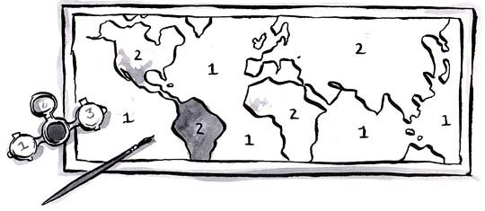
08.28.2008 14:07
More on ORBCOMM AIS
AIS
Satellite Announcement [gCaptain.com] via TheDigitalShip
ORBCOMM has successfully launched six AIS-equipped satellites (a Coast Guard Concept Demonstration satellite and five Quick Launch satellites) after the Cosmos 3M rocket carrying the company's payload blasted off at 10:36am Moscow time (06:36 GMT) from Kapustin Yar, in the Astrakhan Region, on June 19. The satellites are equipped with Automatic Identification System (AIS) technology to receive and report transmissions from AIS-equipped maritime vessels from anywhere within the satellite coverage area, information which is expected to be of major interest to authorities interested in Long Range Identification and Tracking (LRIT) in the marine domain. ...Also, they annouce a new book by Andy Norris:
Digital Ship's resident navigation expert Andy Norris has launched a new book, detailing some of the latest advancements in navigation technology. 'Radar and AIS' by Dr Norris builds on the basic radar theory and target tracking knowledge that seagoing officers already have - while looking ahead into the future where New Technology (NT) radars are hoped to provide significantly enhanced performance. From the 1st July 2008, all new radars required mandatory AIS (automatic identification system) integration. While much effort has gone into ensuring that AIS, radar and chart information is consistent, with uniform symbols and a standard resolution, operators still need guidance and instruction. ...
08.28.2008 13:54
CCOM Weather Station
We've been pulling out the stops with
the new building. Andy M. setup a weather station on the
roof.
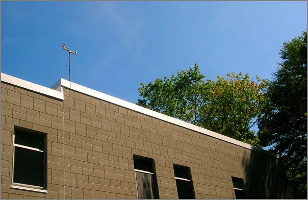
08.28.2008 12:36
Accessing the Apple Addresbook application
This is a pretty cool hint. I've
altered there example with a cut so you can't see actual people in
my address book.
% sqlite3 ~/Library/Application\ Support/AddressBook/AddressBook-v22.abcddb \ "select ZADDRESSNORMALIZED from ZABCDEMAILADDRESS;" | \ cut -d@ -f 2| sort -u | tail sdsc.edu sim.no stanfordalumni.org tone.jpl.nasa.gov ucsd.edu unh.edu usgs.gov yahoo.comQuickly extract all email addresses from Address Book [macosxhints]
08.28.2008 09:18
North Pole NOAA cameras
This is definitely a time where the
camera system needs to have an integrated GPS. I just sent StarDot
a suggestion to add EXIF fields to the images. Hopefully this will
come in future firmware additions. What is the path that this
camera has drifted? Where is it now?
Arctic theme page - Live from the the North Pole
noaa cam 2 latest
In this image, I did a little cropping to just pick out the part that is not just flat gray.
Arctic theme page - Live from the the North Pole
noaa cam 2 latest

In this image, I did a little cropping to just pick out the part that is not just flat gray.
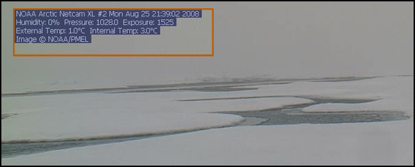
% EXIF.py noaa2.jpg noaa2.jpg: No EXIF information found
08.28.2008 09:03
Sunrise in Scituate
From the NOAA dock last week as Matt
and I got ready for a cruise.
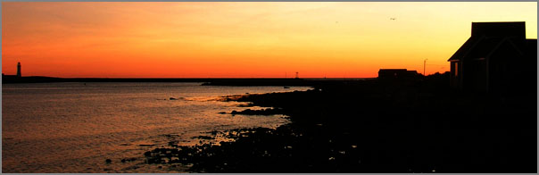
08.27.2008 21:23
Super basic CSS
I'm finally taking the time to
understand CSS more than just randomly hacking on things I only
guess are the right things to do (which usually works). Today, I
got Eric Meyer's CSS, The Definitive Guide, 3rd Ed. The web is one
great big distraction, so a physical book is often a relief. I
already feel more comfortable playing with CSS. Here is my first
pathetic test file:
Looking at the html that code2html output, I realize that I need to get a better code highlighter in my tool box.
<html>
<head>
<title>First CSS attempt</title>
<style type="text/css">
h1 {color: purple;}
body {background: orange;}
</style>
</head>
<body>
<h1>h1 heading</h1>
<p>General text</p>
<p style="color:red;">Second paragraph</p>
</body>
</html>
The results are not that exciting, but it does work: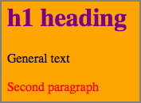
Looking at the html that code2html output, I realize that I need to get a better code highlighter in my tool box.
08.27.2008 19:55
Django 1.0 party in Mountain View, CA
Arg! I'm on the wrong coast right
now. I grew up not to far from the Tied House and ended up there
many times after long days coding just down the street at NASA Ames
in the Intelligent Mechanisms (Now the Autonomy and Robotics Area
or some such). Some very good memories there.
To celebrate the release of Django 1.0, we'll be holding a dinner party at the Tied House in Mountain View on Saturday, September 6th at 7pm. The date and time are designed to tie in with DjangoCon, but anyone is invited - especially those who can't attend DjangoCon. . We've reserved the whole restaurant for Django friends and fans. Dinner starts at 7pm, and the festivities should continue until about 10:30 or so. The party's free, though the dinner and drinks aren't. Tied House has good food and great beer; come hungry! . To make the night extra fun, we'll be holding "lightning talks" at the party - five minute presentations on various Django-related topics. We'll be asking speakers at the conference to present vastly twimmed-down versions of their conference talks, and we'll be opening the floor up to anyone to present their own cool shit.
08.27.2008 13:35
django 1.0 beta2 differences
BackwardsIncompatibleChanges
There have been enough changes in Django since Practical Django Projects was released that it makes the book a bit challenging to use. For starters, the admin interface has been refactored. Gone from models.py are the prepopulated_from, core, edit_inline, min_num_in_admin, and num_extra_on_change keyword arguments. Also, adding class Admin: pass does not put your class into the admin interface. Now you have to do:
There have been enough changes in Django since Practical Django Projects was released that it makes the book a bit challenging to use. For starters, the admin interface has been refactored. Gone from models.py are the prepopulated_from, core, edit_inline, min_num_in_admin, and num_extra_on_change keyword arguments. Also, adding class Admin: pass does not put your class into the admin interface. Now you have to do:
class Category:
# ...
from django.contrib import admin
admin.site.register(Category)
Also, the urls.py for admin has changed:
from django.contrib import admin
admin.autodiscover()
# ...
urlpatterns += patterns('',
(r'^admin/doc/', include('django.contrib.admindocs.urls')),
(r'^admin/(.*)', admin.site.root),
)
08.27.2008 11:46
JavaScript speedup with TraceMonkey
Steve L. just pointed me to this.
Sounds like the Firefox 3.1 release will be a huge deal.
<"http://www.eweek.com/c/a/Application-Development/Mozilla-Speeds-Up-JavaScript-with-TraceMonkey/?kc=EWKNLITA08262008STR1">Mozilla Speeds Up JavaScript with TraceMonkey
This week I'm seriously digging into Django for a web application. I'm sure I will need to do more than just add TinyMCE with JavaScript, so this is important. Steve has been doing some really exciting JavaScript work that will benefit from a better JS engine in Firefox.
BTW, I just made a package of Django 1.0 RC2 (Beta 2) that includes the geodjango/gis functionality. I can't believe geodjango is in the trunk! geodjango-20080827
I've just listened for the first time to the this week in django podcasts ( 33 to be exact ). The pod cast definitely was a good one for giving me more of a feel of some of the corners of Django that I have not gotten to yet.
<"http://www.eweek.com/c/a/Application-Development/Mozilla-Speeds-Up-JavaScript-with-TraceMonkey/?kc=EWKNLITA08262008STR1">Mozilla Speeds Up JavaScript with TraceMonkey
Mozilla has revved up its SpiderMonkey JavaScript engine with a new just-in-time compiler. The TraceMonkey project boosts JavaScript performance by an order of magnitude. TraceMonkey is slated for release in Firefox 3.1 and is expected to also boost Canvas development. . The folks at Mozilla have souped up JavaScript with a new just-in-time compilation scheme in a project known as TraceMonkey, which boosts JavaScript performance as much as 22.5 times depending on which benchmarks and tests you use. ...
This week I'm seriously digging into Django for a web application. I'm sure I will need to do more than just add TinyMCE with JavaScript, so this is important. Steve has been doing some really exciting JavaScript work that will benefit from a better JS engine in Firefox.
BTW, I just made a package of Django 1.0 RC2 (Beta 2) that includes the geodjango/gis functionality. I can't believe geodjango is in the trunk! geodjango-20080827
I've just listened for the first time to the this week in django podcasts ( 33 to be exact ). The pod cast definitely was a good one for giving me more of a feel of some of the corners of Django that I have not gotten to yet.
08.27.2008 08:54
new noaa weather web site
New From NOAA - Southeast U.S. Marine Weather Website
[gCaptian.com]. How does this relate to nowCOAST?
National Weather Service, Southeastern U.S. Marine Weather
National Weather Service, Southeastern U.S. Marine Weather
08.27.2008 08:52
Arctic Healy links
Maintaining a presence in the Arctic requires a national
commitment [An Unofficial Coast Guard Blog]
CGBlog Find #9: USCG Healy - Arctic Mapping 2008 that points to USCGC Healy - Arctic Mapping 2008 (Baker)
Healy cruise plan - Page 4 has a list of science crew. It also shows that they are using a SEABEAM 2112 Bottom Mapping Echosounder and a Knudsen 320B/R Echosounder for mapping.
CGBlog Find #9: USCG Healy - Arctic Mapping 2008 that points to USCGC Healy - Arctic Mapping 2008 (Baker)
Healy cruise plan - Page 4 has a list of science crew. It also shows that they are using a SEABEAM 2112 Bottom Mapping Echosounder and a Knudsen 320B/R Echosounder for mapping.
08.26.2008 14:54
10 knots limit on the US East Coast
Warning... this is one giant posting.
I've extracted some key pieces of the FEIS NOAA submission... it's
a lot of text. There is no direct reference to what we are working
on with AIS or ListenForWhales.org.
NOAA Files Final Environmental Impact Statement on Ship Strike Reduction Measures Agency Seeks to Slow Ships to Protect North Atlantic Right Whales.
NOAA Files Final Environmental Impact Statement on Ship Strike Reduction Measures Agency Seeks to Slow Ships to Protect North Atlantic Right Whales.
NOAA's Fischeries Service is seeking comment on the final environmental impact statement (EIS) for the Ship Strike Reduction Rule. The EIS is one of the final steps in the process to implement a final rule. The ship strike reduction rule aims to reduce the number of endangered North Atlantic right whales injured or killed by collisions with large ships. . The final EIS contains six alternatives, including NOAA's preferred alternative that would require a vessel speed restriction of 10 knots or less in designated areas along the U.S. East Coast. The preferred alternative also includes a five year sunset provision to allow for further consideration of ongoing scientific research. . "NOAA is looking forward to taking a significant step in our efforts to protect right whales," said retired Navy Vice Admiral Conrad C. Lautenbacher, Jr., under secretary of commerce for oceans and atmosphere and NOAA administrator. "Our scientific analysis shows that a 10-knot speed limit in critical areas will significantly reduce the threat to these endangered marine mammals." . The 10-knot speed limit would apply to right whale feeding grounds along the coast in the northeastern United States and to calving grounds near the southeastern United States, where the whales spend most of their time. In the mid-Atlantic area where right whales migrate, the 10-knot speed restrictions would extend out to 20 nautical miles around the major ports. NOAA's Fisheries Service researchers report that approximately 83 percent of right whale sightings in the mid-Atlantic were within 20 nautical miles of shore. The preferred alternative also would establish temporary voluntary speed limits in other areas when an aggregation of three or more right whales is confirmed. . With about 300 in existence, North Atlantic right whales are among the most endangered whales in the world. Slow moving right whales are highly vulnerable to ship collisions, since their migration route crosses major East Coast shipping lanes. Along with existing measures to prevent entanglement of right whales in fishing gear, this would be the most comprehensive approach that NOAA has taken to regulate vessel operators in its effort to help right whales recover. . "The bottom line is that this critically endangered species needs our help," said Lautenbacher. "The preferred alternative is a balanced approach grounded in science that would significantly enhance our ability to protect right whales, but it would also take into account concerns about the safety of ship crews and the impact on an important segment of our economy." . The final EIS on the right whale ship strike reduction rule is a step in the process to promulgate a final rule. The rule is part of NOAA's broader ship-strike reduction efforts. Existing protective actions, such as aircraft surveys and mandatory ship reporting systems that provide advisories and information on right whale locations to mariners, will continue. Additional steps include voluntary routing measures, consulting under the Endangered Species Act with federal agencies on operations of their ships, and an extensive mariner outreach and education program. . NOAA's Fisheries Service is soliciting comments on the final EIS until Sept. 29. After the close of the comment period, NOAA will consider comments it receives and promulgate a final rule expeditiously. The final rule will have an effective date 60 days following publication in the Federal Register. . NOAA understands and predicts changes in the Earth's environment, from the depths of the ocean to the surface of the sun, and conserves and manages our coastal and marine resources.Final Environmental Impact Statement [pdf]
... Specific measures of each type are described in greater detail by region of application in Sections 2.1.1 through 2.1.4. For each measure, which alternative(s) include(s) it is specified. Only a subset of the measures is included in the proposed action (Alternative 6), as summarized in Section 2.2.6. As the modifications to the Boston Traffic Separation Scheme (TSS) and creation of an Area To Be Avoided (ATBA) in the Great South Channel are independent of the NMFS rulemaking and the vessel operational measures considered in the FEIS, they are no longer included as potential measures (see Section 1.4). . In all regions, unless otherwise noted, the vessel operational measures would apply only to nonsovereign2 vessels subject to the jurisdiction of the United States that are 65 ft (19.8 m) or greater in length overall. Sixty-five feet is a vessel-size class recognized by the maritime community and commonly used in maritime regulations (e.g., Automatic Identification System [AIS]; International Navigational Rules Act, Rules of the Road sections) to distinguish between a motorboat and a larger vessel. All Federal vessels and those state enforcement vessels engaged in enforcement or human safety missions would be exempt. In response to comments about vessel maneuverability, NMFS also decided to exempt all vessels from the speed restrictions where oceanographic, hydrographic, and/or meteorological conditions severely restrict vessel maneuverability (see Section 1.4). . With regard to speed restrictions, NMFS' proposed limit is 10 knots; however, for comparison purposes, the FEIS also considers speed limits of 12 and 14 knots. Records of ship strikes in which vessel speed was known indicate that the majority of serious injuries to, or deaths of, whales resulting from ship strikes involved ships operating at speeds of 14 knots or more (Laist et al., 2001; Jensen and Silber, 2003); therefore, a vessel traveling at less than 14 knots would reduce the likelihood and the severity of a ship strike. Recent analysis of these same records indicates that the probability of death or serious injury increases with ship speed. There is a 50 percent (0.26-0.71 for 95 percent confidence interval [CI]) chance that death or serious injury will occur if a right whale is hit by a vessel traveling at 10.5 knots. The probability increases to 75 percent at 14 knots, and exceeds 90 percent at 17 knots (Pace and Silber, 2005). Vanderlaan and Taggart (2007) came to a similar conclusion, determining that the probability of death from a collision was approximately 35-40 percent at 10 knots, 45-60 percent at 12 knots, and 60-80 percent at 14 knots; above 15 knots, it asymptotically approaches 100 percent. . Additionally, vessels traveling at lower speeds may also produce weaker hydrodynamic forces. At higher speeds, such forces have the capacity to first push a whale away from a moving ship and then draw the whale back toward the ship or propeller, resulting in a strike (Knowlton et al., 1998). These forces increase with the vessel's speed; therefore, a whale's ability to avoid a ship in close quarters may be reduced at higher vessel speeds. In a modeling study using data from observed encounters of right whales with vessels, Kite-Powell et al. (2007) determined that more than half of the right whales located in or swimming into the path of an oncoming ship traveling at 15 knots or more are likely to be struck even if the whales attempt evasive action. ...Then at page 404
EL Paso - Southern LNG - Elba Island, Georgia This LNG terminal on Elba Island, Georgia is already an existing terminal (see Section 4.7.3.1 for a description of current operations at this terminal); however El Paso - Southern LNG submitted a proposal to FERC to expand this terminal. Southern LNG has agreed to notify LNG terminals via an automated identification system (AIS) to slow to 10 knots or less when consistent with safe navigation. The AIS is currently operational and sends an AIS message to all incoming vessels. Current AIS data is being archived until a live feed to NOAA's Southeast Regional Office AIS network is achieved. Informal Section 7 consultation has been completed on this terminal and NOAA has concluded that the project would not likely to adversely affect Right Whales. . Offshore LNG Deepwater Ports The two offshore facilities addressed in detail in this section that would have potential impacts on right whales are the Neptune and Northeast Gateway Deepwater Ports. Neptune has been approved and construction started in July 2008, and Northeast Gateway is fully operational. This section addresses the cumulative impacts of constructing/operating these facilities and the increase in vessel traffic generated by the proposed LNG terminals on right whales in the reasonably foreseeable future. . Neptune LNG The Neptune LNG terminal is being built approximately 22 mi (35 km) northeast of Boston, Massachusetts, in a water depth of approximately 260 ft (79 m). One unloading buoy system at the deepwater port would moor up to two shuttle regasification vessels (SRVs). There would be an initial increase in vessel traffic in Massachusetts Bay during the construction of the terminal and installation of a 10.9-mi (17.5-km) pipeline that would connect to the existing Algonquin HubLine natural gas pipeline (Neptune LNG, LLC, 2005). The Deepwater Port license application includes estimates of the vessel traffic from operations (including construction); support vessels are estimated to take 61 round trips per year, SRVs would take approximately 50 round trips per year, and pilot vessels would also take 50 round trips per year, accompanying the SRVs (Neptune LNG, LLC, 2005). Therefore, this facility would increase vessel traffic by approximately 161 round trips (322 one-way trips) per year. . The USCG and MARAD published a notice of availability for the FEIS on November 2, 2006 (71 FR 64606), and the record of decision (ROD) has been approved with conditions. In their scoping comments on the NOI to prepare an EIS for the Neptune LNG Deepwater Port, NOAA specifically requested that the EIS consider the potential impacts of the construction and operation of the terminal on endangered species, including right whales. While the FEIS does consider the potential impacts of this vessel traffic and construction on right whales, the findings of the BO supercede the conclusions in the FEIS. . In addition to the FEIS, these agencies consulted with NMFS under Section 7 of the ESA. The BO resulting from this consultation determined that the action may adversely affect but is not likely to jeopardize right whales or adversely modify or destroy critical habitat. During this process, the applicant and the agencies agreed to the following mitigation measures (which are not specific terms and conditions of the BO): seasonal speed restrictions of 10 knots or less, in accordance with the proposed rule to reduce ship strikes to right whales; year round speed restrictions in the Off Race Point SMA; and installation of passive acoustic detection buoys (to determine the presence of calling whales) in the portion of the Boston TSS that passes through SBNMS. Right whale detections through the buoys or reports from the Sighting Advisory System will be monitored prior to entering the area, and appropriate action will be taken in response to active sightings. Also, Neptune vessels will enter the Boston TSS as soon as practicable and remain in the TSS until the Boston Harbor Precautionary Area (see Figure 4-11). . Northeast Gateway The Northeast Gateway LNG terminal is located offshore in Massachusetts Bay, approximately 13 mi (21 km) south-southeast of the city of Gloucester, Massachusetts, in Federal waters approximately 270 to 290 ft (82 to 88 m) in depth. The natural gas is delivered to shore by a new 16.4-mi (26.4-km) pipeline from the deepwater port to the existing Algonquin HubLine pipeline (Northeast Gateway Energy Bridge, LLC, 2005). As with the Neptune project, the construction and operation of this terminal will increase vessel traffic over current levels. The Deepwater Port license application states that there would be an estimated 55 to 62 Energy Bridge regasification vessels (EBRV) arrivals per year. In addition, support vessels would take one trip per week, or 52 trips per year. Therefore, this facility would increase vessel traffic by 162 to 176 round trips (324 to 352 one-way trips) per year (Northeast Gateway Energy Bridge, LLC, 2005). . The USGC and MARAD published a notice of availability for the FEIS on October 26, 2006 (71 FR 62657), and the ROD has been approved with conditions. In addition to commenting on the NOI, NOAA also provided comments to assist the USCG with their completeness determination and recommended the collection of additional data for further analyses that will be necessary to evaluate the impacts on NOAA's trust resources. These comments include NOAA's concern that the Northeast Gateway project would negatively impact conservation within SBNMS, specifically with respect to NOAA's plans to reconfigure the Boston TSS to reduce the risks of collisions between ships and endangered whales. NOAA issued an Incidental Harrassment Authorization (IHA) on May 14, 2007 (72 FR 27077), which contained various monitoring and mitigation measures to prevent ship strikes to right whales. . Northeast Gateway did include some mitigation measures in its application. The applicant expressly states that "EBRV speed while transiting outer Massachusetts Bay will be less than the sea speed of the vessel because the vessel will be slowing down in preparation for docking at the Northeast Port. In addition, Northeast Gateway will observe seasonal speed restrictions while transiting through or in the TSS adjacent to the Great South Channel and Off Race Point to minimize potential ship strikes on whales" (Northeast Gateway Energy Bridge, LLC, 2005). NOAA's comment letter reiterated that while speed may reduce the number of strikes, speed reduction alone will not reduce the risk of ship strike to zero, and the additional vessel traffic is expected to increase the risk of ship strike mortalities in SBNMS. . Another topic addressed with respect to right whales is the planned construction period of late summer to early spring, which overlaps with the high-use period of right whales in the area, primarily from January through April. The actual construction period has since been changed to May through November to avoid this seasonal aggregation. Construction commenced in May 2007 and was completed in November 2007. Also, noise during construction and the potential for entanglement by fishing gear displaced by LNG sites pose additional threats to right whales. These topics have been analyzed in the EIS and Section 7 consultations. . The BO for Northeast Gateway also came to a finding that the project may adversely affect, but is not likely to jeopardize right whales or adversely modify or destroy critical habitat. Through the Section 7 consultation process, the applicant and agencies voluntarily committed to the following mitigation measures: a seasonal 10-knot speed restriction in the Off Race Point and Great South Channel SMAs; a year-round 12-knot speed restriction in the Boston TSS; and these vessels will enter the TSS as soon as practicable, and remain in the TSS until they need to divert to transit north to the deepwater port. ...And in the comment section:
59b) Maybe AIS would be a means to track whales; it would be hard to do for every whale, but it might be useful to help the ships identify where the whales were. Response: If it were possible to develop this technology, it is likely many years away. Experience with satellite tagging indicates that attachment to the whale is the most significant challenge. More over, even if it were possible to determine where every right whale was at all times, the mariner would still need to take evasive action, e.g., limit speed.Another comment:
72c) Commenter suggested a system with 24/7 real time reporting 365 days of the year, where information would be transmitted back to a clearinghouse, and then distributed to the maritime community through AIS and radio, and then the mariners could make decisions for themselves as to what avoidance actions they should take. Response: Currently the infrastructure for such a system does not exist, and knowledge of right whale locations is only part of the equation. A mariner must still take some type of evasive action, which would be subjective. See the final rule for a more detailed explanation.And another:
94g) Commenter believes that implementing new technology, such as pop-up buoys and tagging whales with transmitters, can improve the detection of whales. Also, AIS with VHF radio communication and MSR should be considered for real time ship strike avoidance. Response: See response to # 58d in reference to pop-up buoys and #88a in reference to tagging whales.Here are 58d and 88a... to go with the response above:
58d) Response: Pop-up buoy identification of whales has several limitations; the whales must be vocalizing, the system would not detect all whales present, and it is not always possible to determine the number of whales without visual verification. This approach would still require evasive action by the mariner.And finally:
88a) Strongly supports the 10-knot speed restriction. Support Alternative 5, but if Alternative 6 is implemented, commenter encourages NMFS to consider using telemetry devices to track individual whales whenever possible. This would allow vessels to be notified well in advance of the presence of right whales, and would greatly improve the effectiveness of DMAs. . Response: Support Acknowledged. Using telemetry devices would require attaching a transmitter to all right whales to track each individual's movement. Historically, tags attached to large whales have had a short lifetime, and sometimes resulted in infection. Finally, while telemetry may remain a useful tool for monitoring the movements of individual animals, it is improbable for an entire population. Even with knowledge of the location of every individual, the mariner would still need to take evasive action, e.g. slow the vessel. This increases unpredictability for shipping companies - an undesirable outcome, as indicated by the industry. Known times and locations of restrictions provide predictability.
08.26.2008 14:03
A blog from the Healy
Stephen Howard's Arctic web log
I woke up this morning to find out that the night watch saw a polar bear at about 5am. Trying to hide my jealousy, I spent the next two hours up on the bridge scanning for bears, but no luck. We have hit an area of thick ice, with many floes four to six feet thick at the water line and remnants of pressure ridges that are thrust above the ice another eight feet or so. This is a good environment for bears, and everyone is keeping their cameras handy in the event one happens to be spotted. I've heard that last year at this same time fourteen bears were spotted, and at about halfway through our cruise we've only seen one. I did see a few fresh tracks of bears, though. Well, it's something! . Because of the polar bear sighting, I thought I'd dedicate today's journal entry to describing a few of the key marine mammal species in this region of the Arctic. I'm no expert on this topic, but I've located some books to help me out. I've also asked George, the community observer from Barrow who I profiled earlier, to check it over for me, as he has a great knowledge of these animals. Thanks, George! . The top predator around here is, of course, the polar bear. These guys can get enormous, up to 1800 pounds, and their principal prey are ringed seals, which they sniff out and excavate from their birthing lairs or stalk near the seal's breathing holes in the ice. Polar bears are powerful swimmers, and can swim 60 miles or more in open water. On open ice, they can run as fast as 30 mph! George says that in Barrow it is not uncommon to see three or four bears foraging on the beaches. When science teams deploy on the ice, Coast Guard crew go down with guns in case a polar bear is around. The Inupiats have an agreement with the federal government allowing subsistence hunting of polar bears, which they use for food and fur. Other than that, there is no commercial hunting of polar bears. There is much concern about the future of polar bears; with thinning ice due to climate change, there will be less seal pupping sites and therefore less for the polar bears to eat. ...
08.26.2008 11:02
Alvin's replacement in the works
Thanks to Janice for pointing this
out:
New Sphere in Exploring the Abyss [nytimes]
... Alvin can transport a pilot and two scientists down 2.8 miles, providing access to 62 percent of the dark seabed. The new vehicle is expected to descend more than four miles, opening 99 percent of the ocean floor to inquiry. But the greater depth means that the vehicle's personnel sphere and its many other systems will face added tons of crushing pressure. ...Replacement HOV [whoi.edu]
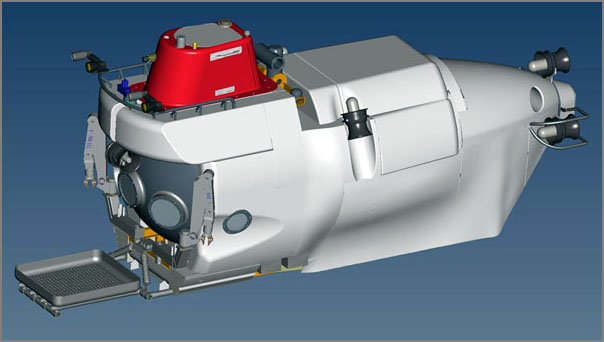
08.25.2008 20:11
Submitted GeoEndNote to Thomson Reuters
Trackback: Sean Gillies points out
that similar mapping of locations for pubs has been done before:
Friends don't let friends use Endnote
I just submitted GeoEndNote as a suggested output format to Thomson Reuters' EndNote output style suggestion page.
It would be cool if other tools like zotero (Firefox extension for references), OpenOffice, or JabRef pick up the same concept.
Also, just ran into BibTeXML. Was just thinking that XML would be more friendly than the straight bibtex format.
For an overview of many reference mangement programs, check out wikipedia: Comparison of reference management software. Note that KML, WKT, Google, spatial, location, or PostGIS do NOT show up in the document.
Kurt, I have in fact seen mapping integrated with Zotero. Shekhar Krishnan used the GeoNames database to locate items by their place of publication in a demo at THATCamp.
I just submitted GeoEndNote as a suggested output format to Thomson Reuters' EndNote output style suggestion page.
It would be cool if other tools like zotero (Firefox extension for references), OpenOffice, or JabRef pick up the same concept.
Also, just ran into BibTeXML. Was just thinking that XML would be more friendly than the straight bibtex format.
For an overview of many reference mangement programs, check out wikipedia: Comparison of reference management software. Note that KML, WKT, Google, spatial, location, or PostGIS do NOT show up in the document.
08.25.2008 16:36
Healy science team spots a polar bear
Just in the last two days, the
science team on the Healy spotted a polar bear.
I haven't seen any bears in the hourly aloftcon camera images, but we can always hope to see one. The ice ponds are a spectacular color.
20080825-2001:
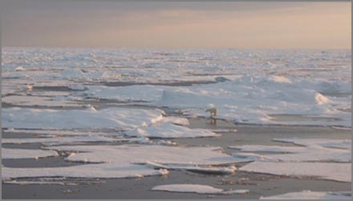
I haven't seen any bears in the hourly aloftcon camera images, but we can always hope to see one. The ice ponds are a spectacular color.
20080825-2001:

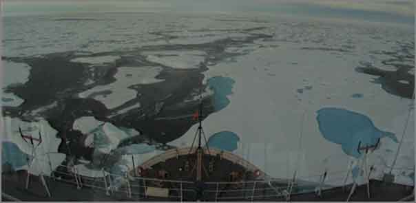
08.25.2008 11:14
Marine Measurement Forum
This is across the pond, so I will
not be going, but sounds interesting.
The Marine Measurement Forum (MMF) is a non-profit making, one-day event that provides opportunities for the informal exchange of ideas, knowledge, techniques and developments across an extensive range of marine scientific measurement activities. Attendees typically include scientists, surveyors, engineers, and business people from a variety of organisations including research centres, academia, manufacturers, survey companies, consultants, monitoring authorities, dredging companies, port authorities, oil companies, etc. The MMF is normally hosted within southern England with occasional excursions to other parts of the UK. . Format: The event covers a single day and is organised such that the average attendee can travel to and from the venue on the same day. Frequency is targeted at 6 monthly intervals.
08.25.2008 11:07
noaadata 0.40 released
This version has two months of
changes. I've been slowly smoking out some bugs in the postgis
network bridge. Also, the regular expression (regex) for AIS NMEA
strings is a big help. noaadata
downloads
- aitutils/uscg.py - added a REGEX for AIS NMEA messages
- ais_positions.py works again - Bug report by Joe Healy
- aisutils.uscg - added a regular expression for the USCG format. Now need to move code to using this
- Fixed AIS NMEA encoding bug report by Miguel Eduardo Gil Biraud
- Added scripts/jpegexif2kml.py for geo tagged photos
- ais-net-to-postgis - better exception logging,
- ais-dumpnames - uses the uscg regex now to parse the nmea lines
- ais_pg_transitlines_noMakeLine - removed bug on vessels with no points
- ais_positions - lots of changes, but still not flexible
- six_min_avg.m - Matlab code by Val for tide stations
- ais_pg_transitsummary - timezone management with pytz. Now not specific to 2006
- tideconvert - for the memme station for June 2008 summer hydro class
- ais_pg_vesselsummary - new program to write excel spreadsheets
- database.py - fixed name handling bug with empty ship names. Traceback on trouble
- template.py - more examples
- binary.py - minor cleanup
08.25.2008 10:33
NOAA Natural Hazards db in kml
Links: Burning Man, Earth API, GlobalMapper, Hazards Database,
X-Prize [Google Earth Blog]
Historical Natural Hazards Database [Google Earth Community]
... Natural Hazards Database - The NOAA National Geophysical Data Center (NGDC) maintains a database of information about historical natural hazards such as earthquakes, tsunamis, and volcanic eruptions. They have created a KML file [Google Earth required.] which lets you view the data which helps with planning for future events in areas like disaster recovery, disaster response, etc. But, it also helps you get a perspective on dangerous locations. This one is definitely worth a look. ...This database would have been helpful to have during my PhD!
Historical Natural Hazards Database [Google Earth Community]
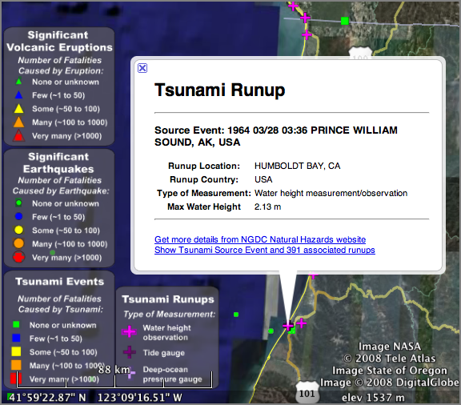
08.24.2008 19:59
3DUI conference
IEEE
Symposium on 3D User Interfaces 2009, March 14-15, Lafayette,
LA. Papers are due in August. In conjunction with IEEE Virtual
Reality 2009
The IEEE Symposium on 3D User Interfaces 2009 is the fourth
international symposium focused on the topic of 3D UIs and will be
held to provide an intensive exchange between industrial and academic
researchers working in various 3DUI research areas and to trigger
discussions among participants. It builds on successful 3DUI workshops
in 2004 and 2005, as well as the IEEE 3DUI Symposiums in 2006, 2007
and 2008. The symposium will last for two days, and will be followed
immediately by the IEEE VR conference. The theme of the Symposium will
cover all areas of 3D UI research. The Symposium themes include, but
are not limited to, the following topics:
* 3D input devices
* 3D display devices
* 3D interaction techniques
* 3D user interface metaphors
* 3D UIs for games
* 3D UIs for CAD
* Applications of 3D UI techniques
* Biologically inspired 3D UIs
* Collaborative 3D interaction
* Desktop 3D UIs
* Evaluation methods for 3D UIs
08.24.2008 13:24
Bill Borucki - Finding planets
William "Bill" Borucki was my first
boss at NASA back in 1989. He was very generous with his time and
got me started on my long and windy history working with NASA. I
did several projects with him. The first was on the
Acquire program to collect photometric data from robotic
telescopes. I later worked on software to try to find extrasolar
planets. [wikipedia] I never found any (PlanetSearch1991),
but now people have found many.
Systems engingeering for the Kepler Mission : a search for terrestrial planets (2006) Duren, Riley M., ... Borucki, Bill, ..., SPIE Astronomical Telescopes and Instrumentiation 2004.
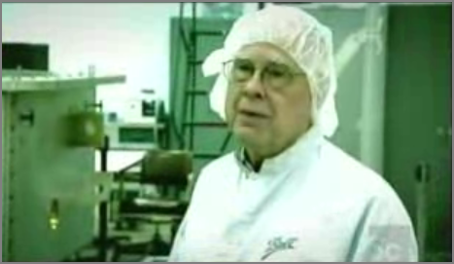
Systems engingeering for the Kepler Mission : a search for terrestrial planets (2006) Duren, Riley M., ... Borucki, Bill, ..., SPIE Astronomical Telescopes and Instrumentiation 2004.
The Kepler mission will launch in 2007 and determine the distribution of earth-size planets (0.5 to 10 earth masses) in the habitable zones (HZs) of solar-like stars. The mission will monitor > 100,000 dwarf stars simultaneously for at least 4 years. Precision differential photometry will be used to detect the periodic signals of transiting planets. Kepler will also support asteroseismology by measuring the pressure-mode (p-mode) oscillations of selected stars. Key mission elements include a spacecraft bus and 0.95 meter, wide-field, CCD-based photometer injected into an earth-trailing heliocentric orbit by a 3-stage Delta II launch vehicle as well as a distributed Ground Segment and Follow-up Observing Program. The project is currently preparing for Preliminary Design Review (October 2004) and is proceeding with detailed design and procurement of long-lead components. In order to meet the unprecedented photometric precision requirement and to ensure a statistically significant result, the Kepler mission involves technical challenges in the areas of photometric noise and systematic error reduction, stability, and false-positive rejection. Programmatic and logistical challenges include the collaborative design, modeling, integration, test, and operation of a geographically and functionally distributed project. A very rigorous systems engineering program has evolved to address these challenges. This paper provides an overview of the Kepler systems engineering program, including some examples of our processes and techniques in areas such as requirements synthesis, validation & verification, system robustness design, and end-to-end performance modeling.
08.24.2008 10:30
Camera with GPS to Google Earth track and thumbnails
I got my first draft of a GoogleEarth
map of the GPS camera run through Boston Harbor.
boston-gpscamera.kmz
The source code will be out in the next release of noaadata as a script called "jpegexif2kml."
boston-gpscamera.kmz
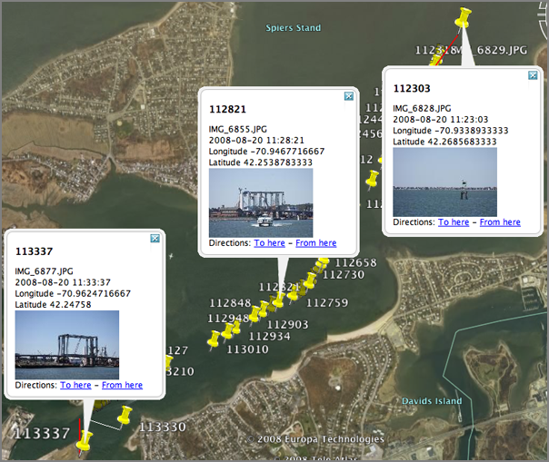
The source code will be out in the next release of noaadata as a script called "jpegexif2kml."
08.23.2008 22:49
pyexiv2 - reading GPS info in JPG headers
I've been working on how to manage
the large number of georeferenced images that Matt and I collected
earlier this week. I'd like to be able to work directly in python.
I first tried EXIF.py. It works,
but it is not a proper python package.
% ./EXIF.py IMG_6829.JPG | grep -i gps GPS GPSAltitude (Ratio): 7 GPS GPSAltitudeRef (Byte): 0 GPS GPSDOP (Ratio): 19/5 GPS GPSDate (ASCII): 2008:08:20 GPS GPSDestBearing (Ratio): 0/0 GPS GPSDestBearingRef (ASCII): T GPS GPSDestDistance (Ratio): 0/0 GPS GPSDestDistanceRef (ASCII): K GPS GPSDestLatitude (Ratio): [0/0, 0/0, 0/0] GPS GPSDestLatitudeRef (ASCII): GPS GPSDestLongitude (Ratio): [0/0, 0/0, 0/0] GPS GPSDestLongitudeRef (ASCII): GPS GPSImgDirection (Ratio): 0/0 GPS GPSImgDirectionRef (ASCII): T GPS GPSLatitude (Ratio): [42, 80511/5000, 0] GPS GPSLatitudeRef (ASCII): N GPS GPSLongitude (Ratio): [70, 140097/2500, 0] GPS GPSLongitudeRef (ASCII): W GPS GPSMapDatum (ASCII): GPS GPSMeasureMode (ASCII): 3 GPS GPSSatellites (ASCII): 08,31,73,359,36,32,, ... ] GPS GPSSpeed (Ratio): 9 GPS GPSSpeedRef (ASCII): N GPS GPSStatus (ASCII): A GPS GPSTimeStamp (Ratio): [15, 20, 3709/100] GPS GPSTrack (Ratio): 200 GPS GPSTrackRef (ASCII): T GPS GPSVersionID (Byte): [2L, 2L, 0L, 0L] GPS Tag 0x001B (Undefined): [0L, 0L, 0L, 0L, 0L, 0L, 0L, 0L, 0L, 0L, 0L, 0L, 0L, 0L, 0L, 0L, 0L, 0L, 0L, 0L, ... ] GPS Tag 0x001C (Undefined): [0L, 0L, 0L, 0L, 0L, 0L, 0L, 0L, 0L, 0L, 0L, 0L, 0L, 0L, 0L, 0L, 0L, 0L, 0L, 0L, ... ] GPS Tag 0x001E (Short): 0 Image GPSInfo (Long): 8670Then I took a look at pyexiv2. I was not able to figure out how to properly pass include and library flags to the compile lines, so I wrote a quick setup.py:
from distutils.core import setup, Extension
srcs = ['src/libpyexiv2.cpp','src/libpyexiv2_wrapper.cpp']
setup(name='pyexiv2',
version='1.0',
ext_modules=[
Extension('libpyexiv2',
srcs,
libraries=['boost_python','exiv2']),
],
py_modules=['pyexiv2'],
)
Then I whipped up a fink info file:
pyexiv2-py.info
% ipython
import pyexiv2
image = pyexiv2.Image('IMG_6829.JPG')
image.readMetadata()
lat = image['Exif.GPSInfo.GPSLatitude']
[str(field) for field in lat]
lat[0].numerator/lat[0].denominator + lat[1].numerator/float(lat[1].denominator) / 60 + lat[2].numerator/lat[2].denominator / 3600.
The above outputs:
['42/1', '161022/10000', '0/1'] 42.268369999999997
08.23.2008 20:20
James Research Webcams
I realized that I've never blogged
about this. Becca (a fellow PhD student in the Driscoll lab) is
Director of the James
Reserve. The reserve has got quite a few cameras on-site to
monitor birds and the environment. Check it out!
Robocam ...
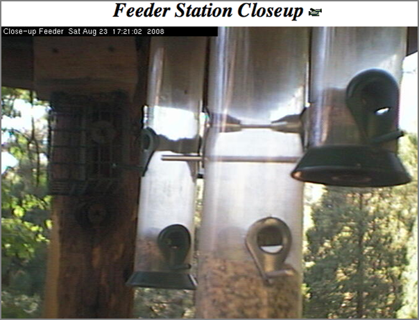
Robocam ...
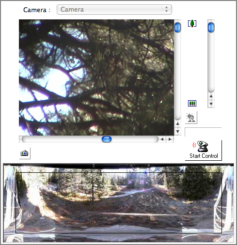
08.23.2008 20:10
PLATO computer system
I was talking to Capt Ben yesterday
and he mentioned that he got to try a system called PLATO back in
school. His description was pretty impressive. I had to check it
out and of course it is on wikipedia:
PLATO was the first (circa 1960, on ILLIAC I) generalized computer assisted instruction system. It was widely used starting in the early 1970s, with more than 1000 terminals worldwide. PLATO was originally built by the University of Illinois and ran in four decades, offering elementary through university coursework to UIUC students, local schools, and more than a dozen universities. . The project was later taken over by Control Data Corporation (CDC), who built the machines it ran on at the University. CDC President William Norris planned to make PLATO a major force in the computing world, and was a keystone of his ideas about corporate social responsibility. Although the project was economically a failure and supplanted by other technologies by the time the last production PLATO system was turned off in 2006, PLATO nevertheless pioneered key concepts such as online forums and message boards, online testing, email, chat rooms, picture languages, instant messaging, remote screen sharing, and multi-player online games. . The acronym PLATO stands for Programmed Logic for Automated Teaching Operations. ... In 1972 a new system named PLATO IV was ready for operation. The PLATO IV terminal was a major innovation. It included Bitzer's orange plasma display invention which incorporated both memory and bitmapped graphics into one display. This plasma display included fast vector line drawing capability and ran at 1260 baud, rendering 60 lines or 180 characters per second. The display was a 512x512 bitmap, with both character and vector plotting done by hardwired logic. Users could provide their own characters to support rudimentary raster graphics. Compressed air powered a piston-driven microfiche image selector that permitted colored images to be projected on the back of the screen under program control. The PLATO IV display also included a 16-by-16 grid infrared touch panel allowing students to answer questions by touching anywhere on the screen. ...
08.23.2008 10:47
Seismic air guns and whales in the Gulf of Mexico
Oil,
Gas Seismic Work Not Affecting Gulf Sperm Whales, Study Shows
I'm having trouble tracking down the original source material on this one. I couldn't find any papers listed on the two researchers' web pages for this. I only found some reports on the project web page: The Sperm Whale Seismic Study (SWSS) [tamu] In looking through their report, I didn't see any visualizations of the whale behavior. I would hold judgement on these until that kind of work has been done. For example, Colin Ware has created TrackPlot to create ribbon plots from DTAG data (suction cup tags put on whales).
I can also offer a paper on which I am co-author to show other ideas for looking at acoustic impacts on whales: Hatch el al 2008 - Characterizing the Relative Contributions of Large Vessels to Total Ocean Noise Fields: A Case Study Using the Gerry E. Studds Stellwagen Bank National Marine Sanctuary, Environmental Management. Remember that this is just the priliminary paper. There is much more to come.
EPESC 2007 Report [pdf - spe.org]
... The multi-year $9 million study, the largest of its type ever undertaken and formally titled Sperm Whale Seismic Study in the Gulf of Mexico, was conducted by the Minerals Management Service and featured cooperation with the Office of Naval Research, the National Science Foundation and the National Fish and Wildlife Foundation. The project brought together researchers from eight universities, but it was managed overall by Texas A&M's Department of Oceanography, with research scientist Ann Jochens and professor Doug Biggs serving as principal investigators. . "The bottom line is that airgun noise from seismic surveys that are thousands of yards distant does not drive away sperm whales living in the Gulf," Biggs explains. . "However, some individual whales feeding at depth reduced the rate at which they searched acoustically for their prey when scientists carried out controlled exposure experiments by bringing seismic surveys close by the whales. As a result, the oil and gas industry has agreed to a best-practice attitude that seismic surveys should shut down temporarily when towed airguns come within one-third of a mile of whales or groups of whales in the Gulf." ...
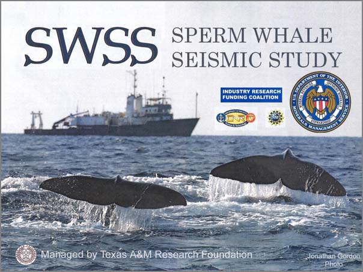
I'm having trouble tracking down the original source material on this one. I couldn't find any papers listed on the two researchers' web pages for this. I only found some reports on the project web page: The Sperm Whale Seismic Study (SWSS) [tamu] In looking through their report, I didn't see any visualizations of the whale behavior. I would hold judgement on these until that kind of work has been done. For example, Colin Ware has created TrackPlot to create ribbon plots from DTAG data (suction cup tags put on whales).
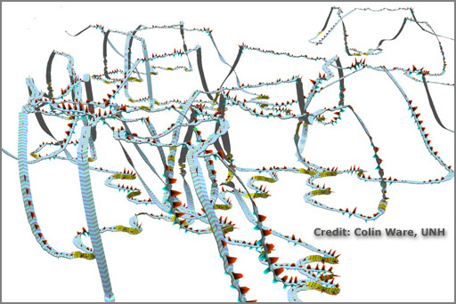
I can also offer a paper on which I am co-author to show other ideas for looking at acoustic impacts on whales: Hatch el al 2008 - Characterizing the Relative Contributions of Large Vessels to Total Ocean Noise Fields: A Case Study Using the Gerry E. Studds Stellwagen Bank National Marine Sanctuary, Environmental Management. Remember that this is just the priliminary paper. There is much more to come.
EPESC 2007 Report [pdf - spe.org]
In the Gulf of Mexico, sperm whales forage for deep-living prey in continental margin areas that are receiving increasing human effort in exploration for and production of oil and gas. Because these endangered species use echolocation "clicks" to search for their prey at depths of 500-2000 m, federal regulatory agencies have expressed concern that sperm whales may be impacted by anthropogenic noise produced by geophysical seismic surveys. To address this concern, TAMU scientists based in College Station and Galveston worked in partnership during summers 2002- 2005 with colleagues from seven other universities for a cooperative study of sperm whales, their habitat in the Gulf of Mexico, and their response to man-made noise. . Our cooperative Sperm Whale Seismic Study (SWSS) was sponsored by the Minerals Management Service in cooperation with the Industry Research Funders Coalition (IRFC), National Science Foundation (NSF), and Office of Naval Research (ONR), with additional support provided by the National Fish and Wildlife Foundation (NFWF). This study was conducted in cooperation with scientists from Oregon State University (OSU), Woods Hole Oceanographic Institution (WHOI), Scripps Institution of Oceanography (SIO), University of Colorado (CU), University of South Florida (USF), University of Durham (UD), University of St. Andrews (UStA), and a UK small business venture called Ecologic Ltd. A Science Review Board was established to provide review and comment on the Summary Report for 2002-2004 and the project's final Synthesis Report. This board consisted of five members: one from the federal government (NOAA), one from industry, one retired from the Marine Mammal Commission, and two from the academic community. All activities involving sperm whales were performed under the terms of valid permits from NOAA Fisheries. ...
08.22.2008 13:13
night run
Would be good to do a geozui
nighttime simulation of the this location to contrast with the
movie of an actual night run through a harbor. I also didn't know
that flickr can do movies.
http://www.flickr.com/photos/oneeighteen/2733197801/
Found through: Running The Houston Ship Channel - At night [gCaptain]
http://www.flickr.com/photos/oneeighteen/2733197801/
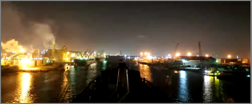
Found through: Running The Houston Ship Channel - At night [gCaptain]
08.21.2008 13:31
Boston photo survey
Matt and I spent all of yesterday
doing a photo survey of much of Boston Harbor. We put on about 100
miles and took over 3000 photos. I think we both have sore arms
from the cameras. We had along two Cannons. Matt had the big zoom
lens, I had the wide angle. The goal was to get all of the key
features that a mariner might use for navigation. Things like
this:
Matt under the 1 bridge:
Matt in action just around the corner from the Constitution...
Kurt in action...
We made it to many of the corners of the harbor.
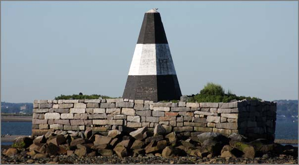
Matt under the 1 bridge:
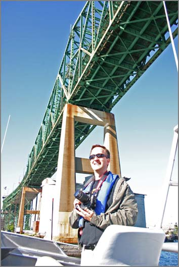
Matt in action just around the corner from the Constitution...
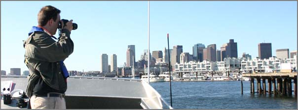
Kurt in action...
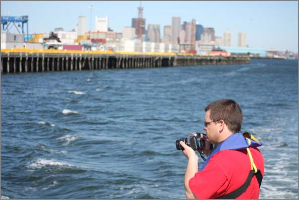
We made it to many of the corners of the harbor.
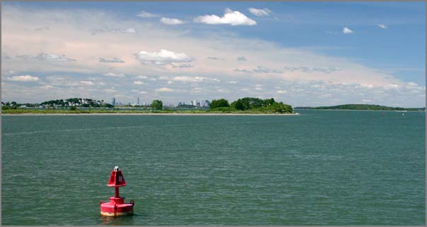
08.19.2008 10:41
CODA underwater inspection system
The Underwater
Inspection System (UIS) [CodaOctopus] seems to be an AUV
Which patents? Is this just the standard multibeam processing? It's not clear how this compares to the work done by NASA with martian spacecraft or by Yuri at CCOM (which is more images). Automated generation of geo-referenced mosaics from video collected by deep submergence vehicles... [PDF]
From: Underwater Anti-Terrorism Technology for SF Bay [HydroInternational]
... Using patented 3D mosaicing techniques, large areas can be inspected very quickly and integrated into an intuitive geo-referenced visualisation of the whole underwater scene in real-time, in the murkiest of waters. ...
Which patents? Is this just the standard multibeam processing? It's not clear how this compares to the work done by NASA with martian spacecraft or by Yuri at CCOM (which is more images). Automated generation of geo-referenced mosaics from video collected by deep submergence vehicles... [PDF]
From: Underwater Anti-Terrorism Technology for SF Bay [HydroInternational]
Coda Underwater Inspection System (UIS), developed in co-operation with the US Coast Guard, has been purchased by the Sheriff's Office of Contra Costa County (CA, USA). The authority will be the first on USA's West Coast to permanently deploy the UIS, developed after the 9/11 attacks to address the need for a new generation of port security technology to respond to underwater threats. ...
08.18.2008 19:36
Two more Healy blogs
The Exploratorium has a section about
arctic regions: Ice Stories,
Dispatches from Polar Scientists:
Kevin Fall and Phil McGillivary are on the Healy and blogging.
Kevin Fall and Phil McGillivary are on the Healy and blogging.
08.15.2008 08:47
Updates from the Healy
Some updates from the Arctic...
Monica has a blog post up from on the ship: Healy Cruise - update 1
Val sent along this photo taken during the helicopter ride out to the Healy:
Monica has a blog post up from on the ship: Healy Cruise - update 1
Val sent along this photo taken during the helicopter ride out to the Healy:
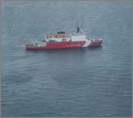
08.13.2008 19:20
CCOM crew in on the Healy
Just got word that the CCOM crew is
onboard the USCG Healy ice breaker. They transited by helo...
always fun.
08.13.2008 17:54
Passing arrangements?
This is a few years ago, but
wow.
Incident Photo of The Week - Head On Collision [gCaptain / CargoLaw]
Incident Photo of The Week - Head On Collision [gCaptain / CargoLaw]
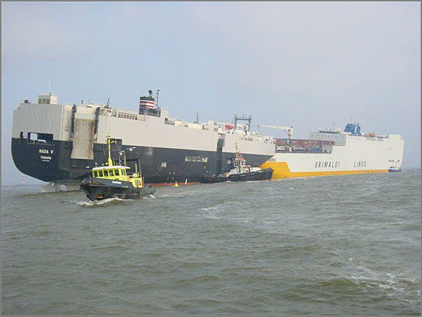
08.13.2008 11:28
LaTeX error messages
I'm not sure what is going on with my
LaTeX document...
pdflatex/natbib: \pdfendlink ended up in different nesting level than \pdfstartlink
<Figures/santabarbC_bath-v6.pdf, id=279, 451.6875pt x 325.215pt>
<use Figures/santabarbC_bath-v6.pdf> [6
! pdfTeX error (ext4): \pdfendlink ended up in different nesting level than \pd
fstartlink.
<to be read again>
\endgroup \set@typeset@protect
l.633
! ==> Fatal error occurred, the output PDF file is not finished!
Transcript written on seismic-py.log.
make: *** [force] Error 1
This happens when I add a \cite{swig} later in my document, but not
early on. My bib entry isn't that interesting:
@article{swig,
title = {Feeding a Large--scale Physics Application to Python},
author = {D M Beazley and P S Lomdhal},
year = {1997},
journal = {International Python Conference},
volume = {6},
}
I really like the way LaTeX does so many things, but its error
reporting is often beyond me. At least the great google
knows...pdflatex/natbib: \pdfendlink ended up in different nesting level than \pdfstartlink
I've found that pdflatex from tetex 1.0.7 aborts when natbib
author-name citations are split across a page boundary in twocolumn
mode. I've attached a test case and the output.
.
Heiko Oberdiek confirms that the same thing happens with TeXLive 6 and
pdfTeX 1.00a. For technical reasons, he expects that it will be very
difficult to fix.
.
Of course, the workaround is to adjust the spacing or linebreaking to
avoid the troublesome linebreak. However, this can be difficult
because no PDF output is generated when pdflatex aborts, and the error
message does not list the line or section of the source file that
would need to be changed.
.
Luckily, there's a solution: when this error occurs, write down the
page number where pdflatex aborted, then add the "draft" option to
hyperref:
.
\usepackage[draft]{hyperref}
In draft mode, I see that this reference puts a later citation over
a boundary. That was some serious frustration. Time to finish the
paper in draft mode and then see if I get lucky. Otherwise, I will
be adding some padding or figuring out how to prevent LaTeX from
splitting particular references. I was sure I was doing something
dumb in my BibTeX file. Nice to know that I was doing the right
thing.08.12.2008 10:00
Gardening - protection for seedlings
Something has been taking out my peas
and beans as they start. Time to bring out the plastic bottles to
give them at least a chance. If the front, you can see some of the
cabages that I'm giving a go. Only Walmart had anything and
starting this late in the summer, I don't think the chances are
good.
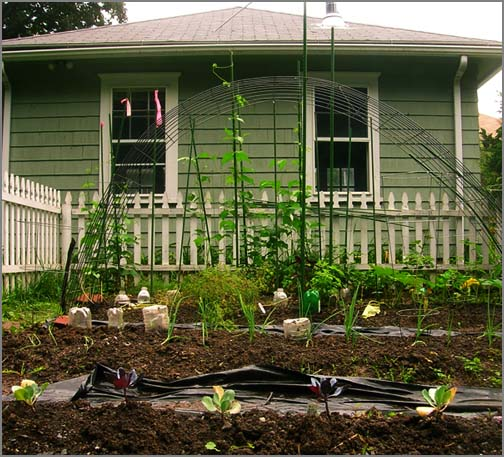
08.11.2008 09:21
USCG in the arctic
Coast Guard Unprepared for Climate Change in Arctic [An
Unoffical Coast Guard Blog] points to
Coast Guard Unprepared for Climate Change in Arctic [National
Defense Magazine]
... The United States must take a two-pronged approach of matching strength with strength and engaging the Russians diplomatically. It is doing neither, Borgerson said. Denmark, Finland, Norway and Iceland are also eying the region, and Canada is spending billions to build a fleet to patrol arctic waters. ... For now, the Coast Guard is doing what it can to discover what is out there. Last fall the Coast Guard started "arctic domain awareness" flights to get a feel for traffic patterns, as well as to monitor foreign vessels to ensure they don't take fish in U.S. territorial waters, Brooks said. ... And in a report last February, the U.S. Polar Operations and Policy Work Group identified problem areas and made a series of recommendations including enhancing national security, projecting a U.S. presence and protecting sovereignty. ...A team from here at CCOM leaves this week to continue the Law of the Seas mapping of the Arctic using the Healy. Note that the US has as of yet signed the treaty.
08.10.2008 07:53
Scripps Pier
Here is an image I just ran into in
my photo collection. I took this 30-Jan-2002 while working on a
paper about the deformation in the Ardath shale that crops out on
the cliff here. Monica, Roxie, and Priyantha were on this beach
yesterday.
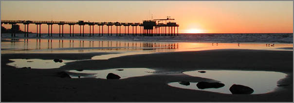
08.10.2008 07:50
Phx WCL model
Mike Stetsion did an amazing job with
the Phoenix Wet Chemistry Lab (WCL)
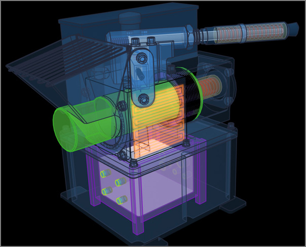
08.10.2008 07:39
Standards for Nautical Pubs
I knew about S-100 effort, the update
to S-57, to make a XML format for Electronic Navigation Charts
(ENC), but I hadn't looked into the standards bodies web pages to
see what is going on. There are some interesting papers.
Standardization of Nautical Publications Working Group (SNPWG) for the CoastPilot. This is a part of Committee on Hydrographic Requirements for Information Systems (CHRIS)
For example, Jeppesen - BSH Pilot Study Report: [9th meeting]
Standardization of Nautical Publications Working Group (SNPWG) for the CoastPilot. This is a part of Committee on Hydrographic Requirements for Information Systems (CHRIS)
For example, Jeppesen - BSH Pilot Study Report: [9th meeting]
This project involved review of selected BSH publications, mapping selected sailing directions content to the SNPWG8.x object model, definition of a Jeppesen XML model, content conversion, and production of sample outputs. BSH had re-structured the content to support the SNPWG model. They translated the content to English, and provided background materials. The pilot team mapped the SNPWG/S57 object model to the sailing directions content. Jeppesen defined an XML model, XSL code, and steel-thread processes to convert the BSH source content from MS Word into an XML repository. Jeppesen defined print, web, and data extract output formats, and additional transforms and processes were developed to move data from the repository into the 3 outputs. BSH reviewed and approved version 1 outputs, then updates were applied in the XML model, and Jeppesen produced a version 2 print sample. . Groundwork for the pilot started in Hamburg, Germany in October 2007. Earnest preparation started in November. The first project outputs were reviewed in February, and the team drafted these findings in March. . The pilot concludes that it is feasible to apply the SNPWG/S57 model to the sailing directions sample and use the Jeppesen XML solution to produce print, web, and data extract encapsulations that preserve the BSH content. Caveats: * This mapping of SNPWG/S57 object model to the BSH Handbook was defined by the pilot team, and has not been validated by SNPWG. * We chose SNPWG/S57 objects that best fit the BSH SD text; we did not evaluate whether these also best fit the BSH implementation of ENCs. * Some content in the sample text was unique to text document formats, and not a clear candidate for chart object attribution; the Jeppesen XML handles both, but this is beyond the SNPWG/S57 model. The pilot study suggests that with diligent follow-through, publications products that begin to implement the SNPWG/S57 model could be introduced in advance 0f the 2011 milestone for S-100. This can make S-100 stronger and soften the impact of introducing S-100 for both the public and private sectors. SNPWG meeting. All 3 outputs provide useful evidence on what is
08.09.2008 22:17
GeoDjango merged into Django mainline
This is great/big news! I didn't
realize GeoDjango was going to
be merged into the mainline Django so soon.
First baby-steps in GeoDjango
From the GeoDjango site:
First baby-steps in GeoDjango
For a couple of days now, Django trunk finally also includes GeoDjango. A geo-spatial extension module for Django that adds -- among other things -- model fields and managers to easily use backends like the geo-spatial extensions for PostgreSQL, MySQL and Oracle. Let's see, how hard it is to get it going on my little MacBook. ...Too bad the author talks about MacPorts instead of fink
From the GeoDjango site:
GeoDjango was merged to trunk on 5th August 2008!
08.09.2008 11:22
Practical Djano Projects
I've got a copy of Practical Django
Projects and am working through it. This book is a bit challenging
for people like me who don't have the time to really dig in deep
into the topic, but it is good. The book drops you into django very
quickly. In the first 3 chapters (25 pages), the book has you with
a working website using static Flatpages and even has you editing
the default Admin pages to at the JavaScript based TinyMCE editor to the flatpages
Admin edit.
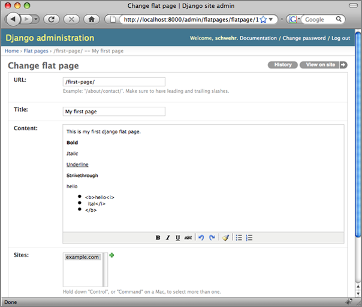
08.09.2008 11:17
Rain and gardening
It's been raining quite a bit. We got
something like two inches in the last two days. I had to add some
drainage to the lake (err... garden). Here is the waterfall in
Newmarket yesterday.
The garden is starting to come along. I've eaten some basil and onions from the garden so far.
I've been starting the next round of vegies. Hopefully it is not too late. Here are the first onions finishing up and two beans just planted.
The folks got me the makings for sprouts. Next batch I will put less in there. I can't consume them as fast as they are growing.
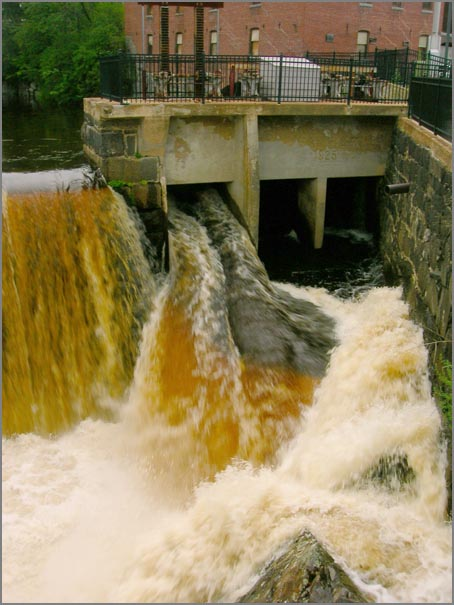
The garden is starting to come along. I've eaten some basil and onions from the garden so far.
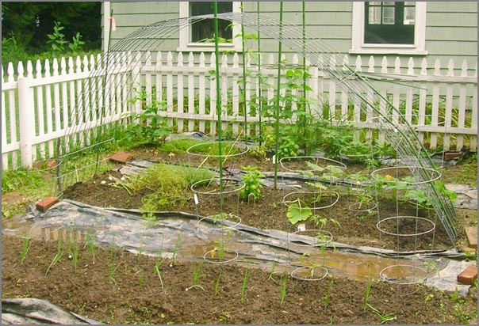
I've been starting the next round of vegies. Hopefully it is not too late. Here are the first onions finishing up and two beans just planted.
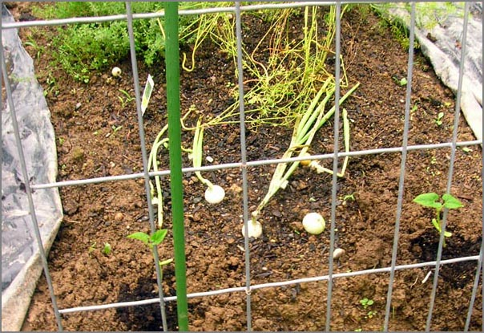
The folks got me the makings for sprouts. Next batch I will put less in there. I can't consume them as fast as they are growing.
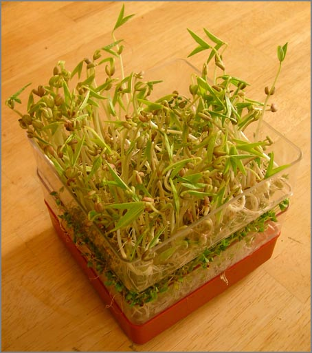
08.09.2008 09:58
Stellwagen Bank National Marine Santuary management plan comment period
Public Comment Period Extended NOAA's Office of National Marine Sanctuaries has extended the period for public comment on the draft management plan and draft environmental assessment for Gerry E. Studds Stellwagen Bank National Marine Sanctuary (SBNMS) to Oct. 3, 2008. The original 90-day public comment period, during which eight public hearings were held throughout New England, was scheduled to end on Aug. 4, 2008. Comments on the draft management plan and draft environmental assessment will now be considered if received on or before Oct. 3, 2008, and may be submitted by mail, emailed to sbplan@noaa.gov, or faxed to 781-545-8036. . The draft plan offers a detailed look at the current state of the Stellwagen Bank National Marine Sanctuary and focuses on key issues affecting the sanctuary, including ecosystem-based sanctuary management, ecosystem alteration, wildlife disturbance, vessel traffic and its potential threat to marine mammals, water quality and invasive species. The plan also addresses important sanctuary programs such as maritime heritage preservation, conservation science, enforcement, interagency cooperation, public outreach and education, and infrastructure development. . For a copy of the draft management plan and draft environmental assessment, contact the Management Plan Review Coordinator, Stellwagen Bank National Marine Sanctuary, 175 Edward Foster Rd., Scituate, MA 02066. Copies can also be downloaded from the sanctuary Web site at http://stellwagen.noaa.gov. . Recruitment for new members on sanctuary's advisory council The SBNMS is seeking applicants for the newly vacant Conservation (Member) seat on its Sanctuary Advisory Council (Council) as well as the alternate seat for the At-Large member. Application packages are available at the sanctuary website, http://stellwagen.nos.noaa.gov/management/welcome.html or can be obtained by contacting Elizabeth.Stokes@noaa.gov or at (781) 545-8026. Ext. 201. Application packages must be received by close of business day 15 September 2008 at Stellwagen National Marine Sanctuary Office, 175 Edward Foster Road, Scituate, MA 02066; faxed to 781-545-8036; or emailed to Elizabeth.Stokes@noaa.gov.
08.08.2008 20:38
Copyright - the current weird state
Under the current US copyright rules,
my blog is copyright protected until at least 2074 and possibly
until 2124 or so (depending on how long I live. Does that make
sense?
How copyright got to its current state (Patry blog ending)
What would the world of computer software be like if we had even stronger copyright protections, but they only lasted 14 years?
William Patry, one of the most respected online commentators on
copyright, has shut down his weblog. His parting observation is stated
in the personal, non-analystical style he liked to cultivate online,
but it will serve as a declaration of policy (as well as a cry of
protest) among artistic and technically creative people for some time
to come:
.
The Current State of Copyright Law is too depressing
...
The powerful individual inclination toward control of copyrightable
material has resulted in political pressure for the strengthening of
copyright protection. In fact, the story of copyright from the 1700s
until about 1990 has been almost entirely a story of lengthening terms
(from 14 years to life plus 70 years), increasing scope (from only
particular types of works to almost all works), and stronger
protections (from restrictions on publishing rights only to
restriction of almost all uses).
...
Now imagine the world where the blog and all the software I wrote
was only protected for 14 years. That means that all the software I
wrote in the 1st 4 years of undergrad would be public domain. The
first software I wrote for a Marsokhod (do you even know what the
Marsokhods are?) would have 2 more years to go. That would be code
written for VxWorks VWMare 4.x on a 68030. In the computer world,
that is the dark ages (and a world I'd rather not revisit).What would the world of computer software be like if we had even stronger copyright protections, but they only lasted 14 years?
08.08.2008 12:02
Python at AGU
Too bad I'm not into hydrology! AGU
has a section called:
H17: Python Application in Hydrology
Python is rapidly becoming one of the main tools in the toolbox of many hydrologists. Python is used for linking models, visualization, data analysis, pre and post processing of model data, computational mathematics, time series analysis, and many other tasks. In addition, it is very attractive for educational purposes. Python is a free and open-source computer language. Some of its main features include a clear and powerful syntax, a large collection of packages (libraries) and an active, helpful, open-source community. In this session, we seek to provide a representative overview of existing applications of Python in the hydrological sciences, to form a hydrological community of Python aficionados, and to demonstrate a critical mass. Above all, we want to show that Python is an excellent choice for the development of software for the solution of both small and large scale hydrological problems.
08.08.2008 07:24
PTP IEEE 1588 timing protocol for hydrographic work
Just out today:
Innovation in High-precision GNSS Timing Products [Hydro
International]
NovAtel Inc. and Brilliant Telecommunications Inc. have signed a technology partnership agreement to develop and deliver innovative timing, synchronization and positioning solutions. The companies will undertake cooperative development activities, combining their respective technologies to create new product platforms that target high precision applications. . "GPS and GNSS precise positioning technology is a key element to meet the growing demands placed on Network Time Protocol (NTP) and Precision Time Protocol (PTPv2) server technology, as the end-to-end transmission and synchronisation of voice, data and video across packet-based networks becomes more sophisticated," said Jon Ladd, NovAtel's Chief Executive Officer. ...If you are interested in high precision timing, you should first read Brian Calder, Rick Brennan, et al. 2007: Application of High-Precision Timing to Distributed Survey Systems [pdf]
Abstract In any hydrographic survey system that consists of more than one computer, one of the most difficult integration problems is to ensure that all components maintain a coherent sense of time. Since virtually all modern survey systems are of this type, timekeeping and synchronized timestamping of data as it is created is of significant concern. This paper describes a method for resolving this problem based on the IEEE 1588 Precise Time Protocol (PTP) implemented by hardware devices, layered with some custom software called the Software Grandmaster (SWGM) algorithm. This combination of hardware and software maintains a coherent sense of time between multiple ethernet-connected computers, on the order of 100 ns (rms) in the best case, of the timebase established by the local GPS-receiver clock. . We illustrate the performance of this techniques in a practical survey system using a Reson 7P sonar processor connected to a Reson 7125 Multibeam Echosounder (MBES), integrated with an Applanix POS/MV 320 V4 and a conventional data capture computer. Using the timing capabilities of the PTP hardware implementations, we show that the timepieces achieve mean (hardware based) synchronization and timestamping within 100-150 ns (rms), and that the data created at the Reson 7P without hardware timestamps has a latency variability of 28 micro-s (rms) due to software constraints within the capture system. This compares to 288 ms (rms) using Reson's standard hybrid hardware/software solution, and 13.6 ms (rms) using a conventional single-oscillator timestamping model.
08.07.2008 14:57
LRIT on vessels
First
Ship with LRIT Compliance
International Tanker Management (ITM) managed and Marshall Islands flagged tankers MT PORT LOUIS, MT ALTIUS and the bulker MV PORT MELBOURNE reported that they have became the first vessels to be officially issued with LRIT Conformance Test Report Certification following the successful shipborne equipment conformance testing of the vessels' Inmarsat C equipment. ...
08.07.2008 14:08
Computer security and the US President
Memo to Next President: How to Get Cyber Security Right by
Bruce Schneier
... Spread those research dollars wide. Lately, most research money has been redirected through DARPA to near-term military-related projects; that's not good. Keep the earmark-happy Congress from dictating (.pdf) how the money is spent. Let the NSF, NIH and other funding agencies decide how to spend the money and don't try to micromanage. Give the national laboratories lots of freedom, too. Yes, some research will sound silly to a layman. But you can't predict what will be useful for what, and if funding is really peer-reviewed, the average results will be much better. Compared to corporate tax breaks and other subsidies, this is chump change. . If our research capability is to remain vibrant, we need more science and math students with decent elementary and high school preparation. The declining interest is partly from the perception that scientists don't get rich like lawyers and dentists and stockbrokers, but also because science isn't valued in a country full of creationists. One way the president can help is by trusting scientific advisers and not overruling them for political reasons. ...
08.07.2008 06:27
Oil spill buoy
Prototype of robotic buoy developed to fight maritime pollution
[Japan Today]
Robot buoy to track oil spills [primidi.com]
I can't find any other pictures, so here is the same one that all the websites are showing...
Robot buoy to track oil spills [primidi.com]
... This robot buoy has been designed by Naomi Kato, professor of submersible robotic engineering at the Department of Naval Architecture at Osaka University, Japan, with the members of his lab. The 'Katolab' "is conducting education and research on underwater robotics, biomechanics on aquatic animals and its application to engineering, computational hydrodynamics of viscous flow fields." ...Development of Spilled Oil Autonomously Chasing Buoy System [Creator's website - Kato Lab]
I can't find any other pictures, so here is the same one that all the websites are showing...
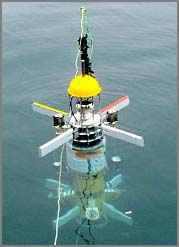
08.06.2008 16:25
NOAA Rainier launches
CCOM just had two researchers out
checking out these launches.
NOAA 4-Year Vessel Acquisition Plan [mtr]
NOAA 4-Year Vessel Acquisition Plan [mtr]
The design of the new launch is based on an evolution of the original hull form designed for NOAA in 1975 and was updated by Jensen Maritime Architects. This proven design features sturdy construction and a full keel for survey work in poorly charted waters. Design updates include an open working deck and 200 lb. capacity A-frame that can mount a wide variety of equipment. The propulsion package consists of a Cummins QSC 8.3 liter 490-hp engine turning a 25"x26" ZF propeller through a ZF 305 gear. Cruising speed is 24 knots and typical survey speeds are approximately eight knots. The multi-mission designed boats are equipped with a state-of-the-art hydrographic surveying suite, including dual frequency Reson 7125 multibeam sonar, Applanix POS MV positioning and attitude sensor, and a Brooke Ocean MVP-30 moving vessel profiler.
08.06.2008 15:55
Marine navigation ontologies
I'm re-reading XML Encapsulation of
Navigation Typography by John Tucker and John Nyberg [Hydro
2005]. John^2 mention some work by Raphael Malyankar that I have
not yet looked into. This project looks very interesting and
looking at the papers, I realized that our GeoCoastPilot
project draws on this research
Representation, Distribution and Ontologies for Geospatial Knowledge [ASU]
Representation, Distribution and Ontologies for Geospatial Knowledge [ASU]
This project is creating a computational ontology that will facilitate the creation of software that understands the meaning of geographical features. The most sophisticated geographical information systems (GIS), ENC (Electronic Navigational Chart) systems, and digital cartographic systems currently available still contain only very basic geospatial information, for example, representations of routes and waypoints, tide tables, currents, overlays of one kind or another. Further, they are capable of only relatively basic geographic operations, for example, distance, adjacency, Voronoi diagrams, etc. Smarter processing of geospatial information is needed, giving software the ability to understand what geospatial entities `mean', so that it is possible for a navigational program to understand, for example, that shorelines can be crossed by aircraft but not by surface vessels, that tidal tables are important for near shore navigation, that routes may need to stay away from restricted waters, that cutting across shipping lanes should be minimized, etc. Future plans for this research include ontologies for other kinds of geospatial knowledge.
08.06.2008 09:48
NOAA and Navy test marine mammal reactions to Navy Sonar
Scientists
Use Naval Exercises to Learn More About How Marine Mammals React to
Sonar [noaa]
... Scientists used the naval military exercises, hosted biennially by the U.S. Pacific Fleet, as an opportunity to learn more about deep-diving whales and how they might respond to military sonar in their environment. RIMPAC includes the use of mid-frequency active sonar for anti-submarine warfare training in various areas around Hawaii. Transmissions were not directed at marine mammals for the study. Scientists and the Navy used mitigation measures to minimize exposure to nearby mammals. . Dr. Brandon Southall, director of NOAA's Ocean Acoustics Program and co-funder of the project says that this study has already produced major advances, including ground-breaking measurements of basic biological factors, such as increased data on individual animals. Although this area of study is relatively new and challenging, scientists around the world are developing sophisticated technologies, and partnering to learn more about how human sounds affect marine mammals. . "The study of marine mammal acoustics and behavior is an area of emerging interest for many reasons, but there have been many recent advances, including this recently completed study" Southall said. "We were fortunate to have some of the best scientists in these fields working with NOAA on this pilot project. It will take some time to analyze the data and see what conclusions may be drawn, but in many ways this effort lays the foundation for more sophisticated collaborative efforts in the future." ...
08.05.2008 17:31
Nahant, MA
Today, we had lunch just north of
Boston on a little peninsula called Nahant at Tides.
A quick drive around yielded all sorts of amazing houses.
Tucked away at the far end of the island is the Northeastern University's Marine Science Center (MSC). They have some nice buildings and amazing grounds, but this building is more of a bunker. Kinda cool looking place to work.
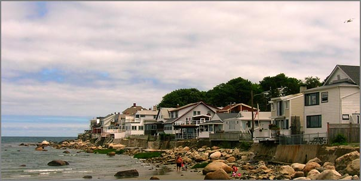
A quick drive around yielded all sorts of amazing houses.
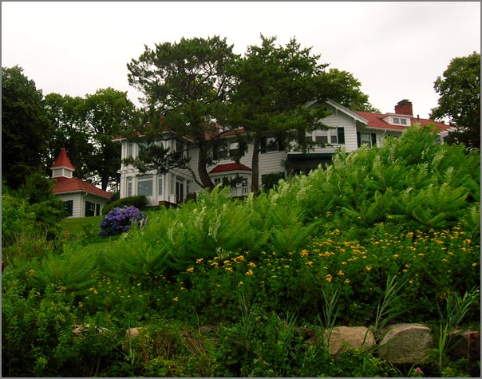
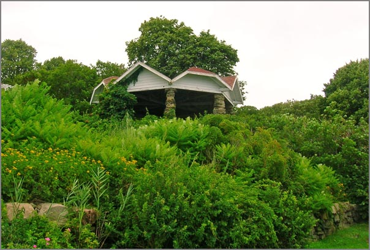
Tucked away at the far end of the island is the Northeastern University's Marine Science Center (MSC). They have some nice buildings and amazing grounds, but this building is more of a bunker. Kinda cool looking place to work.
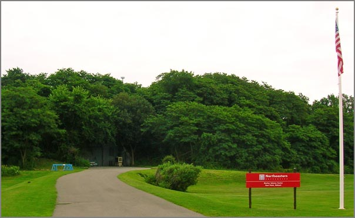
08.05.2008 08:40
First AIS problem report to the USCG
Earlier this year, the USCG said that
nobody had reported any problems with AIS to them. I finally got
around to submitting my first problem. My software had the faulty
assumption that a vessel name in msg 5 always had at least one
character. Then, last night, my daemon crashed.
My code now handles vessels with empty name fields. In python, I now use name.strip('@ ') in one more place.
NAME for 366981240 is ""I went to http://www.navcen.uscg.gov/ado/ais_form.asp and submitted a report. I should really get around to reporting the two government vessels using a MMSI/UserID of 0 in the boston area.
My code now handles vessels with empty name fields. In python, I now use name.strip('@ ') in one more place.
08.04.2008 15:00
Marine marine mammal tag download NOAA system request
Thanks to Andy A. for pointing us to
this...
Develop a System and Build Prototype to Download Dive and GPS Location Information from Telemetry Tags - Solicitation Number: WRAD-8-838
Develop a System and Build Prototype to Download Dive and GPS Location Information from Telemetry Tags - Solicitation Number: WRAD-8-838
... This project will involve the development of a prototype VHF/UHF/GSM receiving station that can archive data transferred from telemetry devices deployed on marine mammals. The recipients of this contract will work in conjunction with NMFS staff and other partners on the construction of this station using existing technologies. The final product should be able to receive and store data from standard dive/gps location tags deployed on marine mammals such as the Wildlife Computers MK10 satellite tag or Sea Mammal Research Unit GPS/GSM tag. Some existing tags utilize UHF or GSM, but designers of the prototype should consider all options for transmitting/receiving archived data. The ultimate goal, beyond the scope of this contract is a station that is portable, robust and able to be deployed in remote areas and in a variety of climates. . Timeline: Sept 2008 - Aug 2010 . Deliverables: * Report on the strengths and weaknesses (including cost, bandwidth, range, power consumption etc.) of using VHF, UHF, GSM or other technology for the transfer of data to logging system. This should include a discussion of the feasibility of modifying existing telemetry tags to communicate with the tower. * Schematics for a portable micro-tower high-bandwidth receiving stations with data-logging capabilities capable of recording data transmitted from a marine mammal telemetry tag using VHF, UHF, GSM or other technology. * Reports on performance tests on various aspects of the technology including, but not limited to: data quality, range, power consumption, portability. * Quarterly project reports that will include progress on development. * Prototype receiving-archiving station. ...
08.04.2008 08:32
2007 AUV Competition Video
This last weekend in San Diego was
the annual AUV competition out at SPAWAR on Point Loma. Wish I was
there to see it, but I did find a video of last year's event. Sib
had me come along and help out one year while I was living in San
Diego. I had fun helping out for one day.
auv08v5final.mov
AUVSI Competition page
auv08v5final.mov
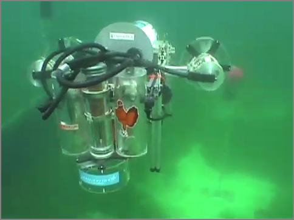
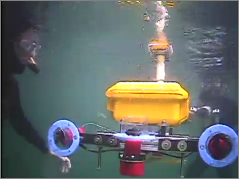
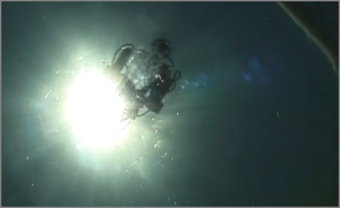
AUVSI Competition page
08.03.2008 23:01
python bitarray module
Just ran into a cPython bitvector
like project: bitarray by Ilan
Schnell. Doens't have a license stated in the files, but it is
interesting to see this implemented using the cPython
interface.
08.02.2008 13:25
Neal gets a grant to map San Diego Bay
Thanks to Monica for pointing me at
this article that includes quotes from Neal Driscoll (one of my PhD
committee co-chairs):
Scientists from two universities team up to map marine habitats in S.D. Bay [SignOnSanDiego]
Scientists from two universities team up to map marine habitats in S.D. Bay [SignOnSanDiego]
... "There is a rich tapestry of sediment types and rocks on the sea floor that give rise to a variety of biological habitats," said Neal Driscoll, a Scripps professor involved in the project. "What we're trying to do is better understand the link between geology and marine biology." . This week, the center received a major boost when the San Diego Port District's Environmental Advisory Committee voted unanimously to recommend a grant of $301,000. . If the full seven-member Port Commission approves the grant as expected on Sept. 2, the center's directors will be able to buy a high-resolution, multibeam echo sounder for mapping the floor of San Diego Bay. ...
08.02.2008 12:39
boost.python hello world on Mac OSX 10.5 with fink
I've been attempting to give a look
at the boost.python tool for adding a python interface to a C++
class. I'm trying a restart on creating a cBitVector class. I don't
know how to use bjam, so I'm not sure if there is an easier way to
do this. But I finally got at least something to work. I had
trouble with a missing init when the module name and shared object
file name did not match.
What I have installed from fink for this:
What I have installed from fink for this:
% fink list -i boost Information about 7010 packages read in 0 seconds. i boost-jam 3.1.16-1 Extension of Perforce Jam make replacement i boost1.33-shlibs 1.33.1-1009 Boost C++ Shared Library Files i boost1.34.python25 1.34.1-1004 Boost C++ Libraries: static and source libs i boost1.34.python25-shli 1.34.1-1004 Boost C++ Libraries (shared libs)There is the source file hello.cpp. I'm not a fan of .cpp for C++ code, but that was the tutorial's style.
char const* greet() {
return "hello";
}
#include <boost/python.hpp>
BOOST_PYTHON_MODULE(hello)
{
using namespace boost::python;
def("greet",greet);
}
Build it the module. Here is the Makefile:
default:
g++ -fno-strict-aliasing -Wno-long-double \
-g -fwrapv -g -Wall \
-I/sw/include/python2.5 -I/sw/include \
-c hello.cpp -o hello.o
gcc -L/sw/lib -bundle -undefined dynamic_lookup \
hello.o -o hello.so -lboost_python
Now try it out...
In [1]: import hello In [2]: hello. # Press tab here hello.__class__ hello.__file__ hello.__name__ hello.__repr__ hello.greet hello.__delattr__ hello.__getattribute__ hello.__new__ hello.__setattr__ hello.html hello.__dict__ hello.__hash__ hello.__reduce__ hello.__str__ hello.o hello.__doc__ hello.__init__ hello.__reduce_ex__ hello.cpp hello.so In [2]: hello.greet() Out[2]: 'hello'
08.01.2008 16:48
eNav 2008
Michael Winkler pointed me to the
recently released schedule for eNavigation 2008 coming up in
November... 2008
Agenda. e.g.
- AIS Regulations, an update - Mr. Jorge Arroyo, U. S. Coast Guard
- Electronic Chart Systems; Where are things going, and will there be a domestic standard? And, if so, what should it be? - U.S. Coast Guard speaker
- An update of the status of Radio navigation systems (Loran and DGPS) - U.S. Coast Guard speaker
- The Coastal and River Information System: System goals, current status, future plans - Mr. Michael F. Winkler Research Hydraulic Engineer, U. S. Army Corps of Engineers
- The COSCO BUSAN Allision and its Aftermath- CDR Brian Tetreault, USCG. Chief, Vessel Traffic Services, U.S. Coast Guard
- Expanding the use of AIS within Vessel Traffic Services: Developing binary messaging to reduce voice communications and workload - Ms. Irene M. Gonin, U.S. Coast Guard Research & Development Center
08.01.2008 08:47
Me in the Anchor newsletter
The Anchor newletter this month has several articles that I
want to mention. There is one on the GeoCoastPilot and another on
the new Integrated Ocean and Coastal Mapping (IOCM) processing
center, in which I now physically reside. There is also a small
paragraph about me visiting a local chapter of the Boy Scout's
Order of the Arrow.
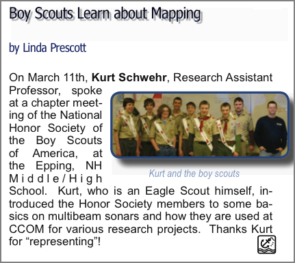